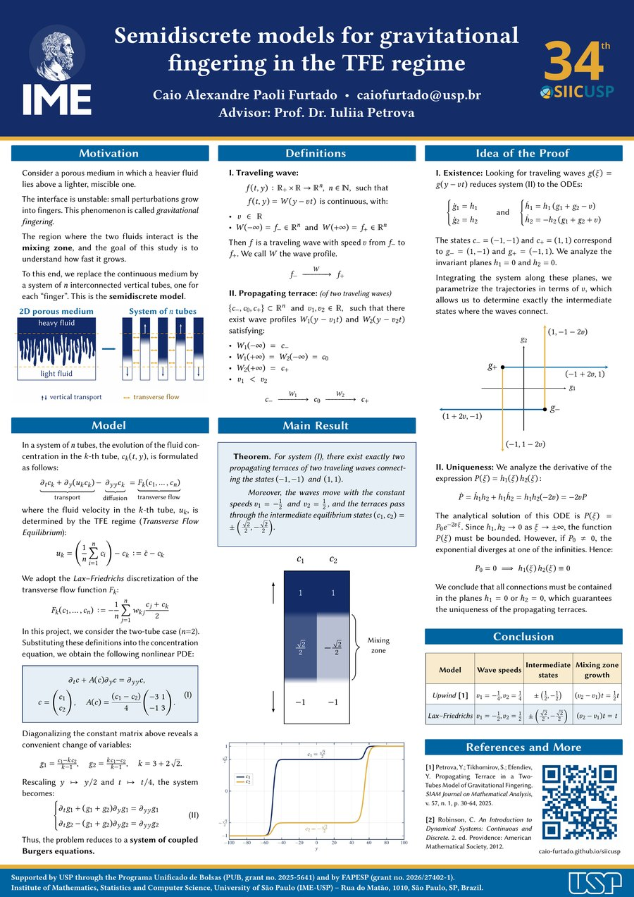

Contents

The poster
Presented at the 34th SIICUSP (International Stage). This page follows the same order as the poster — motivation, model, definitions, main result, idea of the proof and conclusions — and adds what does not fit on a poster: explanatory figures, an animation of the terrace and the complete proof of the Theorem.
1Motivation
Imagine a box containing a heavy fluid on top of a lighter one. What happens physically as time goes by is shown in the simulation below.
fluidmixing
zonelight
fluid
This phenomenon is known as gravitational fingering. The goal of this study is to understand how fast the mixing zone grows.
The semidiscrete model results from simplifying the continuous space to a system of interconnected tubes, representing the “fingers”.
2The idea of semidiscretization
In the continuous space, the concentration of the heavy fluid depends on two spatial coordinates. The semidiscrete simplification consists in discretizing only the horizontal direction: the domain is replaced by \(n\) interconnected vertical tubes, each representing a “finger”. Inside each tube the vertical coordinate \(y\) remains continuous, and what is tracked is the concentration \(c_k(t,y)\) in the \(k\)-th tube. The tubes exchange fluid with each other through the transverse flow.
The evolution of each \(c_k\) combines three mechanisms, which appear as the three terms of the model equation in the next section: vertical transport by the fluid with velocity \(u_k\), diffusion along the tube, and the transverse flow between tubes.
3The model
In a system of \(n\) tubes, the evolution of the fluid concentration in the \(k\)-th tube, \(c_k(t,y)\), is formulated as follows:
\[ \underbrace{\partial_t c_k + \partial_y(u_k c_k)}_{\text{transport}} \;-\; \underbrace{\partial_{yy} c_k}_{\text{diffusion}} \;=\; \underbrace{F_k(c_1,\dots,c_n)}_{\text{transverse flow}} \]where the fluid velocity in the \(k\)-th tube, \(u_k\), is determined by the TFE regime (Transverse Flow Equilibrium):
\[ u_k \;=\; \Bigl(\frac1n \sum_{i=1}^{n} c_i\Bigr) - c_k \;:=\; \bar c - c_k . \]We adopt the Lax–Friedrichs model for the transverse flow function \(F_k\):
\[ F_k(c_1,\dots,c_n) \;:=\; -\frac1n \sum_{j=1}^{n} w_{kj}\,\frac{c_j + c_k}{2}, \qquad w_{kj} \;:=\; \partial_y\bigl(u_j - u_k\bigr). \]Here \(w_{kj}\) is the transverse flux from tube \(k\) to tube \(j\), obtained by mass conservation from the vertical velocities; the Lax–Friedrichs model evaluates the concentration carried by this flux as the average \(\tfrac12(c_j + c_k)\) of the two tubes.
In this project, we consider the two-tube case (\(n=2\)). Substituting the definitions into the concentration equation, we obtain the following nonlinear PDE:
Diagonalizing the constant matrix above, the following change of variables turns out to be promising:
\[ g_1 = \frac{c_1 - k c_2}{k-1}, \qquad g_2 = \frac{k c_1 - c_2}{k-1}, \qquad k = 3 + 2\sqrt2 . \]Rescaling \(y \mapsto y/2\) and \(t \mapsto t/4\), the system becomes:
Thus, the problem reduces to a system of coupled Burgers equations. Throughout this page, (I) denotes the system in the original variables \(c\) and (II) the system in the variables \(g\), already rescaled.
Remark (what the change of variables does)
The matrix \(\begin{pmatrix} -3 & 1 \\ -1 & 3 \end{pmatrix}\) has eigenvalues \(\pm 2\sqrt2\), with eigenvectors \((1,k)\) and \((k,1)\), \(k = 3+2\sqrt2\); the change \(c \mapsto g\) is exactly the one that diagonalizes this matrix. The inverse transformation is \[ c_1 = \frac{k g_2 - g_1}{k+1}, \qquad c_2 = \frac{g_2 - k g_1}{k+1}, \] and, since \(\frac{k-1}{k+1} = \frac{\sqrt2}{2}\), the difference between the tubes becomes \(c_1 - c_2 = \frac{g_1 + g_2}{\sqrt2}\). In particular, the states \(c_- = (-1,-1)\) and \(c_+ = (1,1)\) (light fluid below, heavy fluid above) correspond to \(g_- = (1,-1)\) and \(g_+ = (-1,1)\). The proof is carried out in these variables.
4Definitions
Definition I (traveling wave)
Let \(f(t,y) : \mathbb{R}_+ \times \mathbb{R} \to \mathbb{R}^n\), \(n \in \mathbb{N}\), be a solution of the system such that \[ f(t,y) = W(y - vt) \quad \text{is continuous, with:} \]
- \(v \in \mathbb{R}\);
- \(W(-\infty) = f_- \in \mathbb{R}^n\) and \(W(+\infty) = f_+ \in \mathbb{R}^n\).
Then \(f\) is a traveling wave with speed \(v\) connecting \(f_-\) and \(f_+\). We call \(W\) the wave profile. \[ f_- \;\xrightarrow{\;W\;}\; f_+ \]
Definition II (propagating terrace, of two traveling waves)
A propagating terrace is a set \(\{c_-, c_0, c_+\} \subset \mathbb{R}^n\) and \(v_1, v_2 \in \mathbb{R}\), such that there exist wave profiles \(W_1(y - v_1 t)\) and \(W_2(y - v_2 t)\) satisfying:
- \(W_1(-\infty) = c_-\);
- \(W_1(+\infty) = W_2(-\infty) = c_0\);
- \(W_2(+\infty) = c_+\);
- \(v_1 < v_2\).
\[ c_- \;\xrightarrow{\;W_1\;}\; c_0 \;\xrightarrow{\;W_2\;}\; c_+ \]
5Main result
Theorem
For system (I), there exist exactly two propagating terraces of two traveling waves connecting the states \((-1,-1)\) and \((1,1)\). Moreover, the waves move with speeds \(v_1 = -\tfrac12\) and \(v_2 = \tfrac12\), and the terraces pass through the intermediate states \[ (c_1, c_2) = \pm\Bigl(\tfrac{\sqrt2}{2},\, -\tfrac{\sqrt2}{2}\Bigr). \]
In words: starting from light fluid below (\(c = (-1,-1)\)) and heavy fluid above (\(c = (1,1)\)), the two-tube system admits exactly two terrace configurations. In one of them, tube 1 is “ahead” in the mixing zone (\(c_1 = \tfrac{\sqrt2}{2}\), \(c_2 = -\tfrac{\sqrt2}{2}\)); in the other, the roles of the tubes are swapped. In both, the lower wave moves down with speed \(\tfrac12\) and the upper wave moves up with speed \(\tfrac12\): the mixing zone — the plateau between the two waves — grows linearly, with width \((v_2 - v_1)\,t = t\).
6Animation: the terrace in two tubes
The simulation below solves system (I) numerically (finite differences, explicit scheme on \(y \in [-150,150]\)) from an initial condition in which both tubes have the heavy fluid on top and the light fluid below, but with the interface of tube 1 slightly below the interface of tube 2. On the left, the tubes coloured by concentration (blue \(= 1\), gold \(= -1\), with the same colour scale as Figure 1); on the right, the profiles \(c_1\) and \(c_2\) as functions of \(y\), with \(y\) on the vertical axis to follow the tubes.
Two things to observe, both predicted by the Theorem: the intermediate plateaus adjust by themselves to \(\pm\tfrac{\sqrt2}{2}\) (vertical dashed lines), and the two fronts move apart with speeds \(\mp\tfrac12\), so that the width of the mixing zone grows linearly with rate \(1\).
About the initial condition: if the two tubes started from exactly the same profile (\(c_1 \equiv c_2\)), we would have \(A(c) = 0\) in (I) and the solution would only diffuse — it is the difference between the tubes that drives the transport. Swapping which tube is ahead (option “Terrace B”) leads to the other intermediate state of the Theorem.
7Proof
The poster presents only the idea of the proof, in two parts — existence (looking for traveling waves inside two invariant planes) and uniqueness (showing that every traveling wave lives in one of these planes). Here the proof is carried out in full, in six steps. The whole analysis is done in the variables \(g\) of system (II); the translation back to the variables \(c\) of system (I) is Step 0.
Step 0 — It suffices to work with system (II)
The change of variables \(c \mapsto g\) of Section 3 is linear and invertible, and the rescaling \(\tilde y = y/2\), \(\tilde t = t/4\) takes (I) to (II). If \(c(t,y) = W(y - vt)\) is a traveling wave of (I) with speed \(v\), then, since \[ y - vt \;=\; 2\Bigl(\tilde y - 2v\,\tilde t\Bigr), \] the corresponding function \(g\) is a traveling wave of (II) with speed \(\tilde v = 2v\) in the rescaled variables; and conversely. States, limits at infinity and the order \(v_1 < v_2\) are preserved. Since \(c_\pm = \pm(1,1)\) correspond to \(g_- = (1,-1)\) and \(g_+ = (-1,1)\), the Theorem is equivalent to the following statement:
Claim (the Theorem in the variables \(g\))
System (II) has exactly two propagating terraces of two traveling waves connecting \(g_- = (1,-1)\) to \(g_+ = (-1,1)\). In both, \(\tilde v_1 = -1\) and \(\tilde v_2 = 1\); the intermediate states are \((-1,-1)\) and \((1,1)\).
Indeed, \(\tilde v = \pm 1\) corresponds to \(v = \pm\tfrac12\), and by the inverse transformation of Section 3, \(g = (1,1)\) corresponds to \(c = \bigl(\tfrac{\sqrt2}{2}, -\tfrac{\sqrt2}{2}\bigr)\) and \(g = (-1,-1)\) to \(c = \bigl(-\tfrac{\sqrt2}{2}, \tfrac{\sqrt2}{2}\bigr)\).
Step 1 — Reduction to a system of ODEs
Looking for traveling waves \(g(t,y) = g(\xi)\), \(\xi = y - vt\), reduces system (II) to ODEs: substituting, \(\partial_t g_i = -v\,g_i'\), \(\partial_y g_i = g_i'\), \(\partial_{yy} g_i = g_i''\), we obtain \[ g_1'' = (g_1 + g_2 - v)\,g_1', \qquad g_2'' = -(g_1 + g_2 + v)\,g_2'. \] Writing \(h_i = g_i'\), this is the first-order system in \(\mathbb{R}^4\)
where the dot denotes \(d/d\xi\). A traveling wave connecting \(a\) to \(b\) is a solution of (ODE) with \(g(-\infty) = a\), \(g(+\infty) = b\) and \(h(\pm\infty) = 0\).
Why does \(h = g' \to 0\) at infinity?
By the second part of (ODE), \(h_1(\xi) = h_1(0)\exp\!\bigl(\int_0^\xi (g_1+g_2-v)\,ds\bigr)\); hence \(h_1\) is either identically zero or never vanishes and has constant sign. In the second case, \(g_1\) is strictly monotone and \(g_1(\xi) = g_1(0) + \int_0^\xi h_1\) has a finite limit, so that \(\int_0^{\pm\infty} h_1\) converges. Since the exponent has bounded derivative \(g_1 + g_2 - v\), \(h_1\) varies in a controlled way on intervals of length 1 (\(h_1(\xi+s)/h_1(\xi)\) stays between positive constants for \(0\le s\le 1\)); if \(h_1\) did not tend to zero, the integral would diverge. Therefore \(h_1(\pm\infty) = 0\), and the same argument applies to \(h_2\).
Step 2 — The invariant planes \(h_1 = 0\) and \(h_2 = 0\)
Lemma 1
Let \((g,h)\) be a solution of (ODE). If \(h_1(\xi_0) = 0\) for some \(\xi_0\), then \(h_1 \equiv 0\), that is, \(g_1\) is constant. Analogously for \(h_2\). In other words, the planes \(\{h_1 = 0\}\) and \(\{h_2 = 0\}\) are invariant under the flow of (ODE).
Proof. System (ODE) is autonomous with a smooth vector field, so the existence and uniqueness theorem for solutions holds (see, for instance, [2]); in particular, if a set is made of solutions, no other solution can cross it. Here this can be seen directly: the equation for \(h_1\) is linear in \(h_1\) with continuous coefficient, and integrates explicitly: \[ h_1(\xi) = h_1(\xi_0)\,\exp\!\Bigl(\int_{\xi_0}^{\xi} \bigl(g_1(s) + g_2(s) - v\bigr)\,ds\Bigr). \] If \(h_1(\xi_0) = 0\), then \(h_1 \equiv 0\). The same holds for \(h_2\), with coefficient \(-(g_1+g_2+v)\).
Consequence: in a traveling wave of (II), each component \(g_i\) is either constant or strictly monotone (since \(h_i\) does not vanish and has constant sign).
Step 3 — Uniqueness: every traveling wave lives in an invariant plane
This is the heart of part “II. Uniqueness” of the poster.
Lemma 2
Let \(g(\xi)\) be the profile of a traveling wave of (II) with speed \(v\). Then \(h_1 h_2 \equiv 0\); hence, by Lemma 1, either \(g_1\) is constant (the wave lives in the plane \(h_1 = 0\)) or \(g_2\) is constant (the wave lives in the plane \(h_2 = 0\)).
Proof. We analyze the derivative of the expression \(P(\xi) = h_1(\xi)\,h_2(\xi)\). By (ODE), \[ \dot P = \dot h_1 h_2 + h_1 \dot h_2 = h_1 h_2\,(g_1 + g_2 - v) - h_1 h_2\,(g_1 + g_2 + v) = h_1 h_2\,(-2v) = -2v\,P . \] The analytical solution of this ODE is \(P(\xi) = P_0\,e^{-2v\xi}\), with \(P_0 = P(0)\). Since \(h_1, h_2 \to 0\) as \(\xi \to \pm\infty\), the function \(P(\xi)\) must be bounded (in fact, tend to zero at both infinities). However, if \(v \neq 0\), the exponential \(e^{-2v\xi}\) diverges at one of the infinities, which is incompatible with \(P\) bounded unless \(P_0 = 0\). If \(v = 0\), \(P \equiv P_0\) and \(P(\xi)\to 0\) also force \(P_0 = 0\). Hence \[ P_0 = 0 \;\Longrightarrow\; h_1(\xi)\,h_2(\xi) \equiv 0 . \] If \(h_1\) were not identically zero, by Lemma 1 it would never vanish, and then \(h_2 \equiv 0\). We conclude that \(h_1 \equiv 0\) or \(h_2 \equiv 0\).
We conclude that all connections must be contained in the planes \(h_1 = 0\) or \(h_2 = 0\). This reduces the search for traveling waves of (II) to a scalar problem on each plane, which is what we do next.
Step 4 — The waves inside each plane: scalar Burgers equation
Lemma 3 (waves in the plane \(h_2 = 0\))
Let \(g_2 \equiv \beta\) be constant. There exists a traveling wave of (II) with \(g_2 \equiv \beta\), speed \(v\), \(g_1(-\infty) = a\) and \(g_1(+\infty) = b\) (\(a \neq b\)) if, and only if, \[ a > b \qquad\text{and}\qquad v = \beta + \frac{a+b}{2}. \] In that case the profile is unique up to translation, given by \[ g_1(\xi) = \frac{a+b}{2} - \frac{a-b}{2}\,\tanh\!\Bigl(\frac{(a-b)\,\xi}{4}\Bigr). \]
Proof. In the plane \(h_2 = 0\) the equation for \(g_1\) is \[ g_1'' = (g_1 + \beta - v)\,g_1' = \frac{d}{d\xi}\Bigl[\frac{g_1^2}{2} + (\beta - v)\,g_1\Bigr]. \] Integrating once, \[ g_1' = \frac{g_1^2}{2} + (\beta - v)\,g_1 + C , \] for some constant \(C\). Letting \(\xi \to \pm\infty\), where \(g_1' \to 0\) and \(g_1 \to a, b\), we see that \(a\) and \(b\) are the two roots of the quadratic polynomial on the right, that is, \[ g_1' = \tfrac12\,(g_1 - a)(g_1 - b), \] and comparing the coefficient of \(g_1\) we obtain \(\beta - v = -\tfrac{a+b}{2}\), that is, \(v = \beta + \tfrac{a+b}{2}\). Between the roots the right-hand side is negative, so \(g_1\) is decreasing along the connection: necessarily \(a > b\) (a solution starting from \(a\) at \(-\infty\) can only reach \(b\) at \(+\infty\) by going down). Conversely, given \(a > b\) and \(\beta\), the scalar ODE \(g_1' = \tfrac12 (g_1 - a)(g_1 - b)\) has the explicit solution above — one checks it by differentiating —, which is the unique one (up to translation in \(\xi\)) with values between \(b\) and \(a\), by uniqueness of solutions of autonomous scalar ODEs [2]; with \(v = \beta + \tfrac{a+b}{2}\), it satisfies \(g_1'' = (g_1 + \beta - v)g_1'\) and therefore defines a traveling wave of (II).
Lemma 3′ (waves in the plane \(h_1 = 0\))
Let \(g_1 \equiv \alpha\) be constant. There exists a traveling wave of (II) with \(g_1 \equiv \alpha\), speed \(v\), \(g_2(-\infty) = a\) and \(g_2(+\infty) = b\) (\(a \neq b\)) if, and only if, \[ a < b \qquad\text{and}\qquad v = -\alpha - \frac{a+b}{2}. \] In that case the profile is unique up to translation, given by \[ g_2(\xi) = \frac{a+b}{2} + \frac{b-a}{2}\,\tanh\!\Bigl(\frac{(b-a)\,\xi}{4}\Bigr). \]
Proof. Identical to that of Lemma 3, with the sign changed: \(g_2'' = -(\alpha + g_2 + v)\,g_2'\) integrates to \(g_2' = -\tfrac{g_2^2}{2} - (\alpha + v)\,g_2 + C = -\tfrac12 (g_2 - a)(g_2 - b)\), whence \(\alpha + v = -\tfrac{a+b}{2}\). Now the right-hand side is positive between the roots, \(g_2\) is increasing and \(a < b\).
Remark
On each invariant plane, (II) reduces to a single viscous Burgers equation; the profiles above are exactly the viscous shocks of Burgers (hyperbolic tangent profiles), and the speed formula is the corresponding Rankine–Hugoniot condition. Note the asymmetry: in the plane \(h_2 = 0\) the component \(g_1\) can only decrease along the wave; in the plane \(h_1 = 0\) the component \(g_2\) can only increase.
Step 5 — Which states does a wave connect to \(g_-\) and to \(g_+\)?
We apply Lemmas 3 and 3′ to the two states of interest. Integrating the system along the invariant planes, we parametrize the trajectories in terms of \(v\), which allows us to determine exactly the intermediate states where the waves connect.
Corollary
(a) Waves leaving \(g_- = (1,-1)\). A traveling wave with speed \(v\) and \(g(-\infty) = g_-\) reaches, at \(+\infty\), exactly one of the states \[ (1 + 2v,\,-1) \quad\text{(plane } h_2 = 0\text{)} \qquad\text{or}\qquad (1,\,-1 - 2v) \quad\text{(plane } h_1 = 0\text{)}, \] and in both cases \(v < 0\) is required.
(b) Waves arriving at \(g_+ = (-1,1)\). A traveling wave with speed \(v\) and \(g(+\infty) = g_+\) leaves, at \(-\infty\), from exactly one of the states \[ (-1 + 2v,\,1) \quad\text{(plane } h_2 = 0\text{)} \qquad\text{or}\qquad (-1,\,1 - 2v) \quad\text{(plane } h_1 = 0\text{)}, \] and in both cases \(v > 0\) is required.
Conversely, for each \(v\) with the indicated sign, the corresponding wave exists (Lemmas 3 and 3′).
Proof. By Lemma 2, the wave lives in one of the planes. (a) In the plane \(h_2 = 0\): \(\beta = -1\), \(a = 1\) and, by Lemma 3, \(v = -1 + \tfrac{1 + b}{2}\), that is, \(b = 1 + 2v\); the condition \(a > b\) is \(v < 0\). In the plane \(h_1 = 0\): \(\alpha = 1\), \(a = -1\) and, by Lemma 3′, \(v = -1 - \tfrac{-1 + b}{2}\), that is, \(b = -1 - 2v\); the condition \(a < b\) is \(v < 0\). (b) In the plane \(h_2 = 0\): \(\beta = 1\), \(b = -1\), \(v = 1 + \tfrac{a - 1}{2}\), hence \(a = -1 + 2v\), and \(a > b\) is \(v > 0\). In the plane \(h_1 = 0\): \(\alpha = -1\), \(b = 1\), \(v = 1 - \tfrac{a + 1}{2}\), hence \(a = 1 - 2v\), and \(a < b\) is \(v > 0\).
Step 6 — Counting the terraces and conclusion
Let \(\{g_-, c_0, g_+\}\), \(\tilde v_1 < \tilde v_2\), be a propagating terrace of (II). The wave \(W_1\) leaves \(g_-\) with speed \(\tilde v_1\), so, by Corollary (a), \(c_0\) lies on the horizontal line \(\{g_2 = -1\}\) or on the vertical line \(\{g_1 = 1\}\). The wave \(W_2\) arrives at \(g_+\) with speed \(\tilde v_2\), so, by Corollary (b), \(c_0\) lies on the horizontal line \(\{g_2 = 1\}\) or on the vertical line \(\{g_1 = -1\}\). There are four combinations:
- \(\{g_2 = -1\} \cap \{g_2 = 1\} = \varnothing\) and \(\{g_1 = 1\} \cap \{g_1 = -1\} = \varnothing\): impossible.
- \(\{g_2 = -1\} \cap \{g_1 = -1\} = \{(-1,-1)\}\). Then \(1 + 2\tilde v_1 = -1\) and \(1 - 2\tilde v_2 = -1\), that is, \(\tilde v_1 = -1\) and \(\tilde v_2 = 1\).
- \(\{g_1 = 1\} \cap \{g_2 = 1\} = \{(1,1)\}\). Then \(-1 - 2\tilde v_1 = 1\) and \(-1 + 2\tilde v_2 = 1\), that is, \(\tilde v_1 = -1\) and \(\tilde v_2 = 1\).
In both possible cases the condition \(\tilde v_1 = -1 < 1 = \tilde v_2\) is satisfied, and the four waves involved do exist, by the converse of the Corollary (Lemmas 3 and 3′). Therefore (II) has exactly two terraces connecting \(g_-\) to \(g_+\):
\[ \begin{aligned} \text{Terrace A:}&\quad (1,-1) \xrightarrow{\;W_1\;} (1,1) \xrightarrow{\;W_2\;} (-1,1),\\[4pt] \text{Terrace B:}&\quad (1,-1) \xrightarrow{\;W_1\;} (-1,-1) \xrightarrow{\;W_2\;} (-1,1), \end{aligned} \]both with \(\tilde v_1 = -1\) and \(\tilde v_2 = 1\). By Step 0, this proves the Theorem: in the original variables the speeds are \(v_1 = -\tfrac12\) and \(v_2 = \tfrac12\), and the intermediate states are \(c_0 = \pm\bigl(\tfrac{\sqrt2}{2}, -\tfrac{\sqrt2}{2}\bigr)\).
Remark (the explicit profiles)
Lemmas 3 and 3′ give the profiles in closed form. In Terrace A, the wave \(W_1\) lives in the plane \(h_1 = 0\) with \(g_1 \equiv 1\) and \(g_2\) increasing from \(-1\) to \(1\): \(g_2(\xi) = \tanh(\xi/2)\), \(\tilde v_1 = -1\); the wave \(W_2\) lives in the plane \(h_2 = 0\) with \(g_2 \equiv 1\) and \(g_1\) decreasing from \(1\) to \(-1\): \(g_1(\xi) = -\tanh(\xi/2)\), \(\tilde v_2 = 1\). Going back to the original variables (\(\xi = \tilde y - \tilde v \tilde t = y/2 - \tilde v\, t/4\)), \[ W_1:\; g_2 = \tanh\!\Bigl(\frac{2y + t}{8}\Bigr),\ g_1 \equiv 1; \qquad W_2:\; g_1 = -\tanh\!\Bigl(\frac{2y - t}{8}\Bigr),\ g_2 \equiv 1, \] and \(c\) is obtained by the inverse transformation of Section 3. Figure 6 (and, schematically, Figure 5) was drawn from these formulas; Terrace B is obtained by swapping the roles of the tubes, \(c_1 \leftrightarrow c_2\).
8Conclusion and outlook
Comparing this original result with the study of [1], we conclude that changing the transverse flow model directly affects the phenomenon: the growth rate of the mixing zone effectively doubles.
| Transverse flow model | Wave speeds | Intermediate states \((c_1,c_2)\) | Mixing zone growth |
|---|---|---|---|
| Upwind — Petrova, Tikhomirov, Efendiev [1] | \(v_1 = -\tfrac14,\; v_2 = \tfrac14\) | \(\pm\bigl(\tfrac12, -\tfrac12\bigr)\) | \((v_2 - v_1)\,t = \tfrac12\,t\) |
| Lax–Friedrichs — this work | \(v_1 = -\tfrac12,\; v_2 = \tfrac12\) | \(\pm\bigl(\tfrac{\sqrt2}{2}, -\tfrac{\sqrt2}{2}\bigr)\) | \((v_2 - v_1)\,t = t\) |
In both models the terraces connect the same states \((-1,-1)\) and \((1,1)\) and have the same structure (two waves, one intermediate plateau); what changes with the transverse flow model are the speeds and the values of the plateau.
Future research directions
The result of this page is a first step: it completely describes the two-wave terraces in the two-tube model with Lax–Friedrichs transverse flow. Several natural questions remain open.
- Systems with \(n > 2\) tubes. The model of Section 3 is written for \(n\) tubes, but the Theorem deals only with \(n = 2\). With more tubes, system (I) has \(n\) components, the matrix of the transport term gets larger and the change of variables that diagonalizes it is no longer so simple. The question is whether terraces connecting \((-1,\dots,-1)\) to \((1,\dots,1)\) still exist, with which speeds and which intermediate states — and, above all, how the growth rate of the mixing zone depends on \(n\).
- Terraces of \(N > 2\) traveling waves. With two tubes, the terrace has exactly two waves and one plateau. With more tubes, the transition between the two states is expected to decompose into a longer sequence of traveling waves, with several intermediate plateaus and ordered speeds \(v_1 < v_2 < \dots < v_N\). Understanding the structure of these terraces — how many there are, which states form them and in which order the waves appear — is the direct generalization of Definition II and of the Theorem.
- Asymptotic stability of the solutions. The Theorem describes the special terrace-type solutions, but does not say whether they are actually reached by the dynamics: given an initial condition connecting \((-1,-1)\) to \((1,1)\), does the solution of the PDE (I) approach the terrace as \(t \to \infty\)? The simulation of Section 6 suggests so, at least for initial conditions like the ones used there, but turning this evidence into a proof requires studying the asymptotic stability of these solutions, which involves the linearization of (I) around the terrace and the behaviour of perturbations in time.
- Deeper study of the Burgers equation. The reduction of the system to the coupled Burgers equations (II) suggests exploring more thoroughly what is known about the viscous Burgers equation — the Cole–Hopf transformation, the explicit solutions, the stability of its viscous shocks — and investigating how much of this theory survives the coupling between the two equations. This is the natural path both to construct more general solutions and to attack the stability question above.
9References
[1] Petrova, Y.; Tikhomirov, S.; Efendiev, Y. Propagating Terrace in a Two-Tubes Model of Gravitational Fingering. SIAM Journal on Mathematical Analysis, v. 57, n. 1, p. 30–64, 2025.
[2] Robinson, C. An Introduction to Dynamical Systems: Continuous and Discrete. 2nd ed. Providence: American Mathematical Society, 2012.